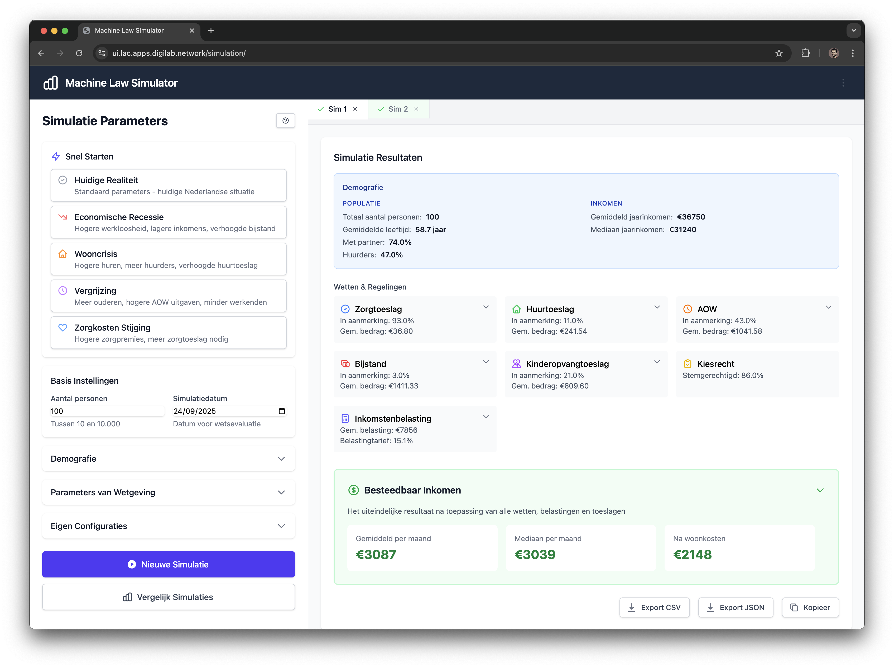

Voorbeeld in de Praktijk
Hoe zou het RegelRecht ecosysteem er in de praktijk uit kunnen zien? Twee voorbeelden van transparante regeltoepassing en wetgevingstesting.

Persoonlijk Regeldashboard
In deze toekomstvisie zien burgers op één plek al hun toeslagen, uitkeringen en verplichtingen. Elke regel is traceerbaar terug naar de machine-uitvoerbare wetgeving, met volledige transparantie over hoe besluiten tot stand komen.
- Real-time regeltoepassing - directe feedback over wijzigingen
- Volledige traceerbaarheid - van wet naar persoonlijke situatie
- Proactieve communicatie - automatische updates bij regelwijzigingen

Wetgeving Simulatie & Testing
Voordat nieuwe wetgeving wordt ingevoerd, kunnen beleidsmakers de gevolgen testen in een simulatie omgeving. Dit helpt onbedoelde effecten te voorkomen en de kwaliteit van wetgeving te verbeteren.
- Impact analyse - voorspel de gevolgen van nieuwe regelgeving
- Harmonisatie controle - detecteer conflicten met bestaande wetgeving
- Scenario testing - test verschillende beleidsopties
- Kwaliteitscontrole - detecteer inconsistenties voor implementatie